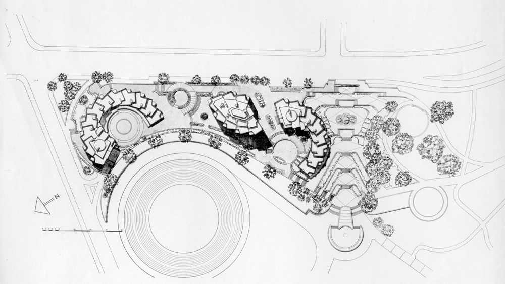
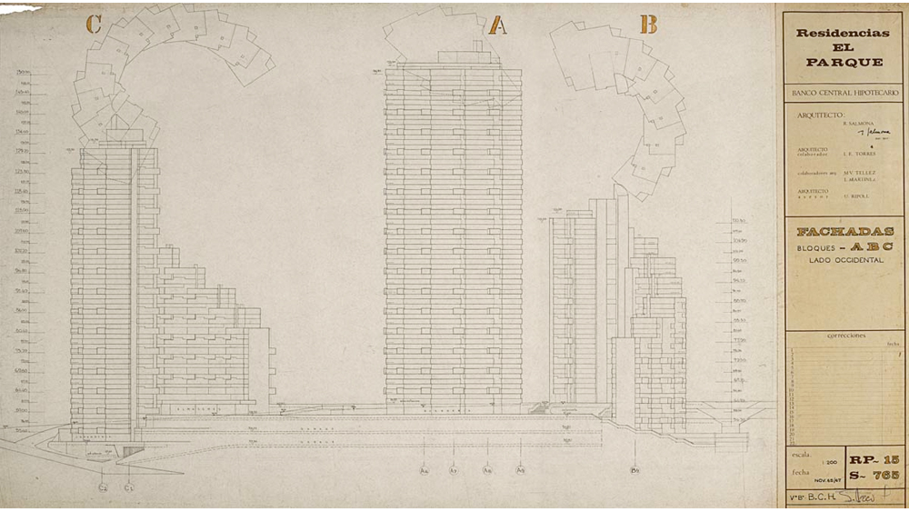
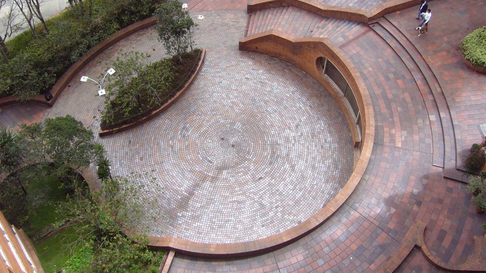
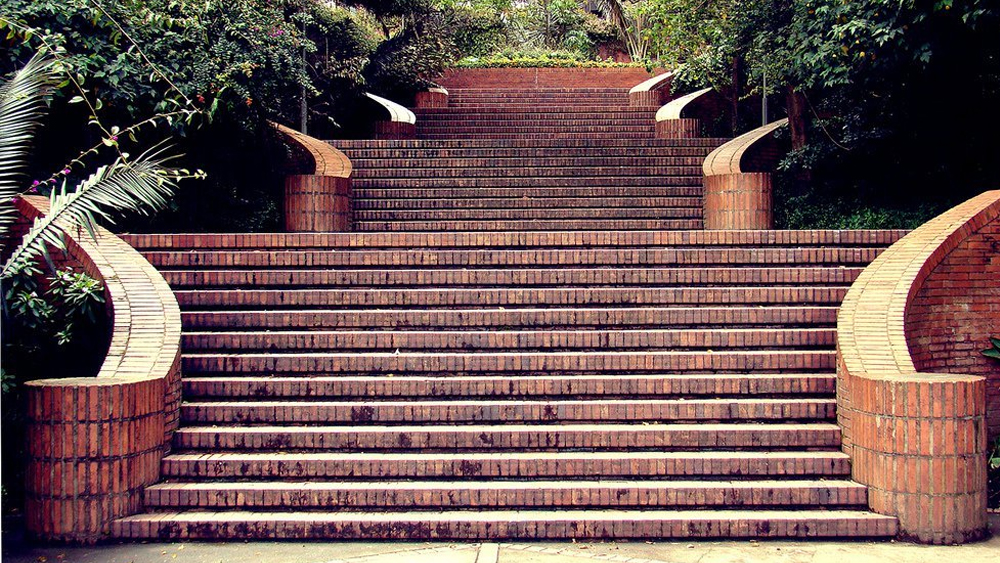
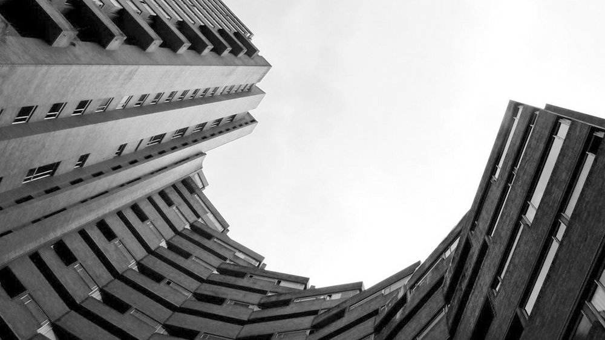
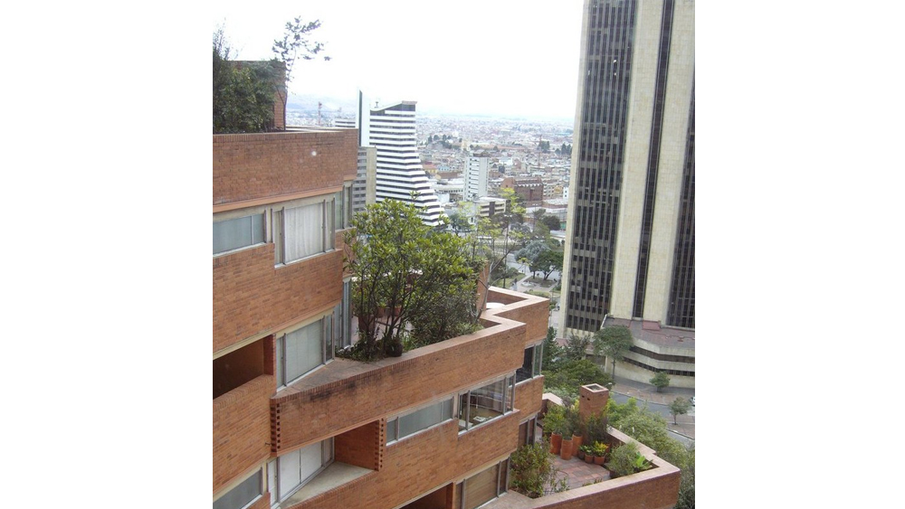

Aunque el conjunto de las Torres del Parque es hoy reconocido como una de las mejores obras arquitectónicas latinoamericanas del siglo XX, su construcción a comienzos de los años setenta estuvo rodeada de fuertes polémicas. No era fácil entender porqué unos edificios de apartamentos no eran juiciosamente rectangulares, como lo eran todos, sino que se torcían en curvas ascendentes que parecían caprichosamente escultóricas.
 Llegar a esas formas generadas por espirales, le había llevado al arquitecto Rogelio Salmona cerca de cinco años de arduo trabajo en el que había sondeado distintas alternativas hasta encontrar una dirección cierta. En las torres se recogía la experiencia de la arquitectura colombiana en la década de los sesenta y culminaba un proceso sistemático de experimentación personal.
Salmona necesitó desarrollar un riguroso procedimiento para encontrar materiales y sistemas constructivos que permitieran subir treinta pisos, localizar cerca de 300 apartamentos de distintos tamaños y mantenerse dentro de un presupuesto restringido.
 Pero sobre todo necesitaba algo que no se lo pedía el contrato sino él mismo: expresar, con formas, la íntima convicción de que la arquitectura está enraizada en un lugar intransferible. Un lugar que no sólo se constituye en condiciones geográficas y ambientales --las montañas de Bogotá, la luz de Bogotá, el Parque de la Independencia, la Plaza de Toros-- sino también de condiciones sociales: un uso del espacio exterior, una manera de habitar, una concepción de la familia.
Las Torres del Parque no están hechas sólo para sus habitantes particulares, sino para todos los bogotanos. Los espacios exteriores públicos y privados se entremezclan en una lección de convivencia urbana.
 Contemplar sus fachadas nos permite a todos entender que el ocaso bogotano posee una luz dramática e intensa que denota un secreto sentido de pertenencia a la ciudad. Sus formas sorpresivas nos acercan a nuevos descubrimientos diarios de nosotros mismos. El espectáculo majestuoso de las montañas entre los edificios no nos deja olvidar que Bogotá está construida sobre una sabana verde y húmeda.
Por la alegría que produce la presencia de las Torres del Parque, entiende uno porqué la arquitectura puede llegar a ser un hecho de cultura, un arte que, como ninguno, tiene la capacidad de mejorar y dignificar la vida. Gracias, Salmona.